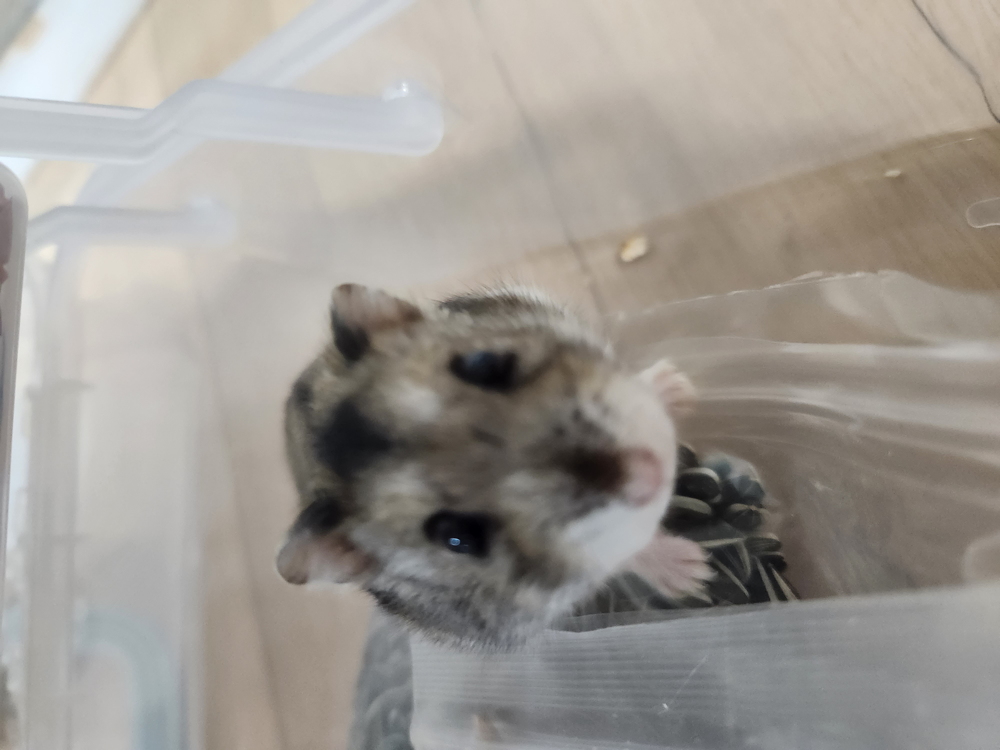

NAMU
햄스터에 의한, 햄스터를 위한, 햄스터의 사이트!
'나무'에 오신것을 환영합니다!
Site of the hamster, by the hamster, for the hamster!
Welcome to 'Namu'!
▶정보
음식: 햄스터들이 먹어도 되는 음식!! .jpg "나무")
●소량 먹어도 되는 것들:
1. 브로콜리
2. 당근 (물에 데쳐 주기)
3. 딸기
4. 수박 (아주 소량)
5. 시금치 (물에 데쳐 주기)
●먹어도 되는 것들:
1. 양상추, 상추(새싹채소로도 급여 가능)
2. 오이
3. 피망, 파프리카(비만 예민한 개체에겐 피망이나 노란색 파프리카만)
4. 토마토, 감자 (열매만)
5. 바나나
6. 고구마(껍질 제외)
7. 옥수수
8. 딸기, 블루베리, 라즈베리, 블랙베리
9. 멜론, 포도(씨앗 X)
10. 수박
●먹으면 안되는 것들:
1. 팥, 강낭콩
2. 복숭아, 매실, 감귤류 과일(레몬 포함) (가지, 잎사귀, 씨앗도 금지)
3. 양파, 파, 마늘, 부추, 고추
4. 무
5. 가지
용품: 햄스터 키울 때 꼭 필요한 용품!! .jpg "나무")
1. 케이지 (120L 이상 권장)
2. 사료 (저질 사료는 좋지 않음)
3. 간식 (해바라기씨, 밀웜 등)
4. 이갈이
5. 베딩 (톱밥, 종이를 같이 쓰거나 택 1)
6. 은신처 (최소 3개)
7. 급수/급식기
8. 쳇바퀴 (골든 30cm 이상, 드워프 25cm 이상, 로보로브스키 22cm 이상 권장)
9. 화장실
10. 목욕모래 (벤토나이트 X)
햄스터 용품 쇼핑몰: 유용한 용품 쇼핑사이트 소개!! .jpg "나무")
1. 햄토피아
2. 햄숲
3. 보라펫
4. 햄퐁
5. 햄찌네 등
기타정보: 유용한 정보 소개!! 
1. 톱밥 두껍게 깔아주기 (10~15cm)
2. 급여는 햄스터 몸무게의 10%~12%
3. 핸들링은 짧게 해주고 스트레스 받지 않는 선에서 하기
4. 하루에 해바라기 씨는 3~4개, 밀웜은 1개 정도만 주기
5. 물 자주 갈아 주기
6. 1햄 1케